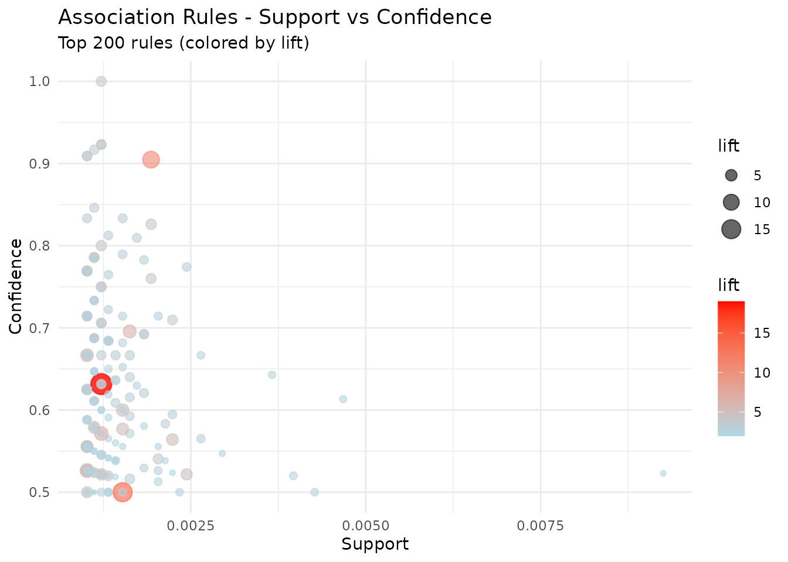
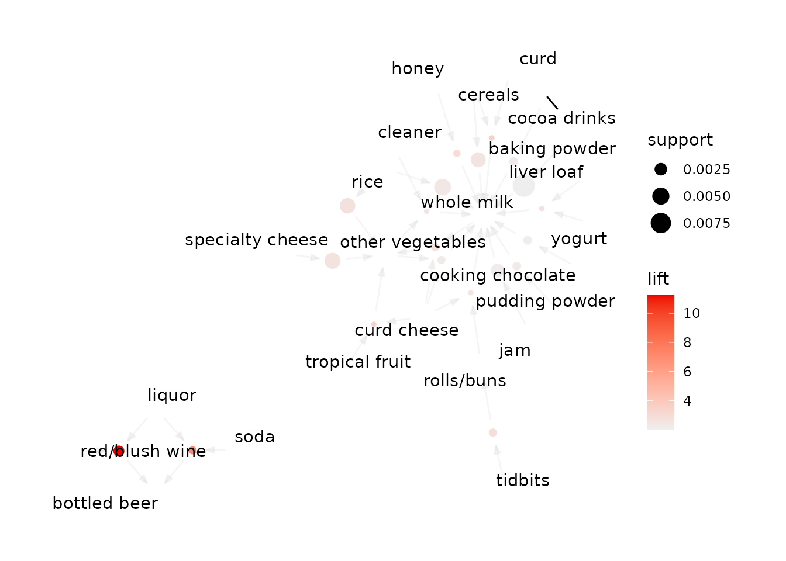

Overview
Association rule mining finds statements of the form when a basket contains A, it tends to also contain B. It is unsupervised: there is no response variable, and every item is a candidate on both sides.
tidy_apriori() wraps the Apriori algorithm from arules and returns
the rules as a tibble instead of an S4 object you have to
inspect() to read. The rest of the family filters, ranks
and applies those rules.
We use Groceries, a month of point-of-sale data from a
grocery outlet: 9,835 transactions over 169 item categories.
data("Groceries", package = "arules")
Groceries
#> transactions in sparse format with
#> 9835 transactions (rows) and
#> 169 items (columns)Mining Rules
Three numbers describe every rule, and two of them are thresholds you set up front:
- Support — the fraction of all transactions containing the whole rule. A support floor is what makes the search tractable, and what stops you acting on a pattern that occurred four times.
- Confidence — of the baskets containing the left-hand side, the fraction that also contain the right-hand side. This is the conditional probability.
- Lift — confidence divided by the right-hand side’s own frequency. Lift of 1 means the two are independent; above 1 means the left-hand side makes the right-hand side more likely than chance.
rules <- tidy_apriori(
Groceries,
support = 0.001, # at least ~10 of the 9,835 transactions
confidence = 0.5, # right-hand side follows at least half the time
minlen = 2 # rules with something on both sides
)
#> Apriori
#>
#> Parameter specification:
#> confidence minval smax arem aval originalSupport maxtime support minlen
#> 0.5 0.1 1 none FALSE TRUE 5 0.001 2
#> maxlen target ext
#> 10 rules TRUE
#>
#> Algorithmic control:
#> filter tree heap memopt load sort verbose
#> 0.1 TRUE TRUE FALSE TRUE 2 TRUE
#>
#> Absolute minimum support count: 9
#>
#> set item appearances ...[0 item(s)] done [0.00s].
#> set transactions ...[169 item(s), 9835 transaction(s)] done [0.00s].
#> sorting and recoding items ... [157 item(s)] done [0.00s].
#> creating transaction tree ... done [0.00s].
#> checking subsets of size 1 2 3 4 5 6 done [0.01s].
#> writing ... [5668 rule(s)] done [0.00s].
#> creating S4 object ... done [0.00s].
print(rules)
#> Tidy Apriori Results
#> ====================
#>
#> Parameters:
#> Minimum support: 0.001
#> Minimum confidence: 0.5
#> Rule length: 2 - 10
#>
#> Results:
#> Number of rules: 5668
#>
#> Quality Measure Summary:
#> Support: 0.0010 - 0.0223 (mean: 0.0017)
#> Confidence: 0.5000 - 1.0000 (mean: 0.6250)
#> Lift: 1.96 - 19.00 (mean: 3.26)
#>
#> Top 5 rules by lift:
#> # A tibble: 5 × 8
#> rule_id lhs rhs support confidence coverage lift count
#> <int> <chr> <chr> <dbl> <dbl> <dbl> <dbl> <int>
#> 1 53 {Instant food products,… {ham… 0.00122 0.632 0.00193 19.0 12
#> 2 37 {soda,popcorn} {sal… 0.00122 0.632 0.00193 16.7 12
#> 3 444 {flour,baking powder} {sug… 0.00102 0.556 0.00183 16.4 10
#> 4 327 {ham,processed cheese} {whi… 0.00193 0.633 0.00305 15.0 19
#> 5 55 {whole milk,Instant foo… {ham… 0.00153 0.5 0.00305 15.0 15
#>
#> Use inspect_rules() to view more rules
#> Use visualize_rules() to create visualizationsThe tibble is the part you work with:
rules$rules_tbl
#> # A tibble: 5,668 × 8
#> rule_id lhs rhs support confidence coverage lift count
#> <int> <chr> <chr> <dbl> <dbl> <dbl> <dbl> <int>
#> 1 1 {honey} {whole m… 0.00112 0.733 0.00153 2.87 11
#> 2 2 {tidbits} {rolls/b… 0.00122 0.522 0.00234 2.84 12
#> 3 3 {cocoa drinks} {whole m… 0.00132 0.591 0.00224 2.31 13
#> 4 4 {pudding powder} {whole m… 0.00132 0.565 0.00234 2.21 13
#> 5 5 {cooking chocolate} {whole m… 0.00132 0.52 0.00254 2.04 13
#> 6 6 {cereals} {whole m… 0.00366 0.643 0.00569 2.52 36
#> 7 7 {jam} {whole m… 0.00295 0.547 0.00539 2.14 29
#> 8 8 {specialty cheese} {other v… 0.00427 0.5 0.00854 2.58 42
#> 9 9 {rice} {other v… 0.00397 0.52 0.00763 2.69 39
#> 10 10 {rice} {whole m… 0.00468 0.613 0.00763 2.40 46
#> # ℹ 5,658 more rows
names(rules)
#> [1] "rules_tbl" "rules" "parameters" "n_rules"$rules holds the underlying arules object for anything
the tidy layer does not cover, in the same way $fit does
for tl_model().
Choosing the thresholds
Support and confidence trade recall against volume, and the trade is steep.
grid <- expand.grid(
support = c(0.001, 0.005, 0.01),
confidence = c(0.3, 0.5, 0.7)
)
grid$n_rules <- mapply(function(s, c) {
tidy_apriori(Groceries, support = s, confidence = c)$n_rules
}, grid$support, grid$confidence)
#> Apriori
#>
#> Parameter specification:
#> confidence minval smax arem aval originalSupport maxtime support minlen
#> 0.3 0.1 1 none FALSE TRUE 5 0.001 2
#> maxlen target ext
#> 10 rules TRUE
#>
#> Algorithmic control:
#> filter tree heap memopt load sort verbose
#> 0.1 TRUE TRUE FALSE TRUE 2 TRUE
#>
#> Absolute minimum support count: 9
#>
#> set item appearances ...[0 item(s)] done [0.00s].
#> set transactions ...[169 item(s), 9835 transaction(s)] done [0.00s].
#> sorting and recoding items ... [157 item(s)] done [0.00s].
#> creating transaction tree ... done [0.00s].
#> checking subsets of size 1 2 3 4 5 6 done [0.01s].
#> writing ... [13770 rule(s)] done [0.00s].
#> creating S4 object ... done [0.00s].
#> Apriori
#>
#> Parameter specification:
#> confidence minval smax arem aval originalSupport maxtime support minlen
#> 0.3 0.1 1 none FALSE TRUE 5 0.005 2
#> maxlen target ext
#> 10 rules TRUE
#>
#> Algorithmic control:
#> filter tree heap memopt load sort verbose
#> 0.1 TRUE TRUE FALSE TRUE 2 TRUE
#>
#> Absolute minimum support count: 49
#>
#> set item appearances ...[0 item(s)] done [0.00s].
#> set transactions ...[169 item(s), 9835 transaction(s)] done [0.00s].
#> sorting and recoding items ... [120 item(s)] done [0.00s].
#> creating transaction tree ... done [0.00s].
#> checking subsets of size 1 2 3 4 done [0.00s].
#> writing ... [482 rule(s)] done [0.00s].
#> creating S4 object ... done [0.00s].
#> Apriori
#>
#> Parameter specification:
#> confidence minval smax arem aval originalSupport maxtime support minlen
#> 0.3 0.1 1 none FALSE TRUE 5 0.01 2
#> maxlen target ext
#> 10 rules TRUE
#>
#> Algorithmic control:
#> filter tree heap memopt load sort verbose
#> 0.1 TRUE TRUE FALSE TRUE 2 TRUE
#>
#> Absolute minimum support count: 98
#>
#> set item appearances ...[0 item(s)] done [0.00s].
#> set transactions ...[169 item(s), 9835 transaction(s)] done [0.00s].
#> sorting and recoding items ... [88 item(s)] done [0.00s].
#> creating transaction tree ... done [0.00s].
#> checking subsets of size 1 2 3 4 done [0.00s].
#> writing ... [125 rule(s)] done [0.00s].
#> creating S4 object ... done [0.00s].
#> Apriori
#>
#> Parameter specification:
#> confidence minval smax arem aval originalSupport maxtime support minlen
#> 0.5 0.1 1 none FALSE TRUE 5 0.001 2
#> maxlen target ext
#> 10 rules TRUE
#>
#> Algorithmic control:
#> filter tree heap memopt load sort verbose
#> 0.1 TRUE TRUE FALSE TRUE 2 TRUE
#>
#> Absolute minimum support count: 9
#>
#> set item appearances ...[0 item(s)] done [0.00s].
#> set transactions ...[169 item(s), 9835 transaction(s)] done [0.00s].
#> sorting and recoding items ... [157 item(s)] done [0.00s].
#> creating transaction tree ... done [0.00s].
#> checking subsets of size 1 2 3 4 5 6 done [0.01s].
#> writing ... [5668 rule(s)] done [0.00s].
#> creating S4 object ... done [0.00s].
#> Apriori
#>
#> Parameter specification:
#> confidence minval smax arem aval originalSupport maxtime support minlen
#> 0.5 0.1 1 none FALSE TRUE 5 0.005 2
#> maxlen target ext
#> 10 rules TRUE
#>
#> Algorithmic control:
#> filter tree heap memopt load sort verbose
#> 0.1 TRUE TRUE FALSE TRUE 2 TRUE
#>
#> Absolute minimum support count: 49
#>
#> set item appearances ...[0 item(s)] done [0.00s].
#> set transactions ...[169 item(s), 9835 transaction(s)] done [0.00s].
#> sorting and recoding items ... [120 item(s)] done [0.00s].
#> creating transaction tree ... done [0.00s].
#> checking subsets of size 1 2 3 4 done [0.00s].
#> writing ... [120 rule(s)] done [0.00s].
#> creating S4 object ... done [0.00s].
#> Apriori
#>
#> Parameter specification:
#> confidence minval smax arem aval originalSupport maxtime support minlen
#> 0.5 0.1 1 none FALSE TRUE 5 0.01 2
#> maxlen target ext
#> 10 rules TRUE
#>
#> Algorithmic control:
#> filter tree heap memopt load sort verbose
#> 0.1 TRUE TRUE FALSE TRUE 2 TRUE
#>
#> Absolute minimum support count: 98
#>
#> set item appearances ...[0 item(s)] done [0.00s].
#> set transactions ...[169 item(s), 9835 transaction(s)] done [0.00s].
#> sorting and recoding items ... [88 item(s)] done [0.00s].
#> creating transaction tree ... done [0.00s].
#> checking subsets of size 1 2 3 4 done [0.00s].
#> writing ... [15 rule(s)] done [0.00s].
#> creating S4 object ... done [0.00s].
#> Apriori
#>
#> Parameter specification:
#> confidence minval smax arem aval originalSupport maxtime support minlen
#> 0.7 0.1 1 none FALSE TRUE 5 0.001 2
#> maxlen target ext
#> 10 rules TRUE
#>
#> Algorithmic control:
#> filter tree heap memopt load sort verbose
#> 0.1 TRUE TRUE FALSE TRUE 2 TRUE
#>
#> Absolute minimum support count: 9
#>
#> set item appearances ...[0 item(s)] done [0.00s].
#> set transactions ...[169 item(s), 9835 transaction(s)] done [0.00s].
#> sorting and recoding items ... [157 item(s)] done [0.00s].
#> creating transaction tree ... done [0.00s].
#> checking subsets of size 1 2 3 4 5 6 done [0.01s].
#> writing ... [1279 rule(s)] done [0.00s].
#> creating S4 object ... done [0.00s].
#> Apriori
#>
#> Parameter specification:
#> confidence minval smax arem aval originalSupport maxtime support minlen
#> 0.7 0.1 1 none FALSE TRUE 5 0.005 2
#> maxlen target ext
#> 10 rules TRUE
#>
#> Algorithmic control:
#> filter tree heap memopt load sort verbose
#> 0.1 TRUE TRUE FALSE TRUE 2 TRUE
#>
#> Absolute minimum support count: 49
#>
#> set item appearances ...[0 item(s)] done [0.00s].
#> set transactions ...[169 item(s), 9835 transaction(s)] done [0.00s].
#> sorting and recoding items ... [120 item(s)] done [0.00s].
#> creating transaction tree ... done [0.00s].
#> checking subsets of size 1 2 3 4 done [0.00s].
#> writing ... [1 rule(s)] done [0.00s].
#> creating S4 object ... done [0.00s].
#> Apriori
#>
#> Parameter specification:
#> confidence minval smax arem aval originalSupport maxtime support minlen
#> 0.7 0.1 1 none FALSE TRUE 5 0.01 2
#> maxlen target ext
#> 10 rules TRUE
#>
#> Algorithmic control:
#> filter tree heap memopt load sort verbose
#> 0.1 TRUE TRUE FALSE TRUE 2 TRUE
#>
#> Absolute minimum support count: 98
#>
#> set item appearances ...[0 item(s)] done [0.00s].
#> set transactions ...[169 item(s), 9835 transaction(s)] done [0.00s].
#> sorting and recoding items ... [88 item(s)] done [0.00s].
#> creating transaction tree ... done [0.00s].
#> checking subsets of size 1 2 3 4 done [0.00s].
#> writing ... [0 rule(s)] done [0.00s].
#> creating S4 object ... done [0.00s].
grid
#> support confidence n_rules
#> 1 0.001 0.3 13770
#> 2 0.005 0.3 482
#> 3 0.010 0.3 125
#> 4 0.001 0.5 5668
#> 5 0.005 0.5 120
#> 6 0.010 0.5 15
#> 7 0.001 0.7 1279
#> 8 0.005 0.7 1
#> 9 0.010 0.7 0Dropping the support floor by a factor of ten multiplies the rule count by more than a hundred. A high-confidence rule at very low support is usually a description of a handful of shoppers, not of the shop.
Reading the Rules
inspect_rules() sorts and takes the head, which is what
you want almost every time:
inspect_rules(rules, by = "lift", n = 10)
#> # A tibble: 10 × 8
#> rule_id lhs rhs support confidence coverage lift count
#> <int> <chr> <chr> <dbl> <dbl> <dbl> <dbl> <int>
#> 1 53 {Instant food products… {ham… 0.00122 0.632 0.00193 19.0 12
#> 2 37 {soda,popcorn} {sal… 0.00122 0.632 0.00193 16.7 12
#> 3 444 {flour,baking powder} {sug… 0.00102 0.556 0.00183 16.4 10
#> 4 327 {ham,processed cheese} {whi… 0.00193 0.633 0.00305 15.0 19
#> 5 55 {whole milk,Instant fo… {ham… 0.00153 0.5 0.00305 15.0 15
#> 6 4807 {other vegetables,curd… {cre… 0.00102 0.588 0.00173 14.8 10
#> 7 330 {processed cheese,dome… {whi… 0.00112 0.524 0.00214 12.4 11
#> 8 4858 {tropical fruit,other … {but… 0.00102 0.667 0.00153 12.0 10
#> 9 2261 {hamburger meat,yogurt… {but… 0.00102 0.625 0.00163 11.3 10
#> 10 5638 {tropical fruit,other … {but… 0.00102 0.625 0.00163 11.3 10by also accepts "support",
"confidence" and "count". Set
decreasing = FALSE to look at the other end.
summarize_rules() gives the distribution of each quality
measure across the whole rule set:
summary_stats <- summarize_rules(rules)
summary_stats$n_rules
#> [1] 5668
data.frame(
measure = c("support", "confidence", "lift"),
min = c(summary_stats$support$min, summary_stats$confidence$min,
summary_stats$lift$min),
median = c(summary_stats$support$median, summary_stats$confidence$median,
summary_stats$lift$median),
max = c(summary_stats$support$max, summary_stats$confidence$max,
summary_stats$lift$max)
)
#> measure min median max
#> 1 support 0.001016777 0.00132181 0.02226741
#> 2 confidence 0.500000000 0.60000000 1.00000000
#> 3 lift 1.956824513 2.89899928 18.99565427Because the result is a tibble, dplyr works directly:
rules$rules_tbl %>%
filter(lift > 5, count >= 15) %>%
arrange(desc(confidence)) %>%
select(lhs, rhs, confidence, lift, count)
#> # A tibble: 70 × 5
#> lhs rhs confidence lift count
#> <chr> <chr> <dbl> <dbl> <int>
#> 1 {liquor,red/blush wine} {bot… 0.905 11.2 19
#> 2 {tropical fruit,butter,curd} {yog… 0.789 5.66 15
#> 3 {tropical fruit,whole milk,rolls/buns,pastry} {yog… 0.789 5.66 15
#> 4 {tropical fruit,whole milk,soft cheese} {yog… 0.714 5.12 15
#> 5 {root vegetables,whipped/sour cream,cream chees… {yog… 0.714 5.12 15
#> 6 {tropical fruit,whipped/sour cream,margarine} {yog… 0.714 5.12 15
#> 7 {sausage,root vegetables,whipped/sour cream} {yog… 0.714 5.12 15
#> 8 {tropical fruit,whole milk,whipped/sour cream,r… {yog… 0.714 5.12 15
#> 9 {tropical fruit,root vegetables,whole milk,butt… {yog… 0.708 5.08 17
#> 10 {tropical fruit,whole milk,coffee} {yog… 0.704 5.04 19
#> # ℹ 60 more rowsWorking With One Item
filter_rules_by_item() narrows to rules mentioning an
item. where picks the side: "lhs" for what the
item leads to, "rhs" for what leads to it,
"both" for either.
# What predicts a purchase of whole milk?
filter_rules_by_item(rules, "whole milk", where = "rhs") %>%
arrange(desc(lift)) %>%
select(lhs, confidence, lift, count) %>%
head(5)
#> # A tibble: 5 × 4
#> lhs confidence lift count
#> <chr> <dbl> <dbl> <int>
#> 1 {rice,sugar} 1 3.91 12
#> 2 {canned fish,hygiene articles} 1 3.91 11
#> 3 {root vegetables,butter,rice} 1 3.91 10
#> 4 {root vegetables,whipped/sour cream,flour} 1 3.91 17
#> 5 {butter,soft cheese,domestic eggs} 1 3.91 10
# And what does a basket containing yoghurt lead to?
filter_rules_by_item(rules, "yogurt", where = "lhs") %>%
arrange(desc(lift)) %>%
select(lhs, rhs, confidence, lift) %>%
head(5)
#> # A tibble: 5 × 4
#> lhs rhs confidence lift
#> <chr> <chr> <dbl> <dbl>
#> 1 {other vegetables,curd,yogurt,whipped/sour cream} {cre… 0.588 14.8
#> 2 {tropical fruit,other vegetables,yogurt,white bread} {but… 0.667 12.0
#> 3 {hamburger meat,yogurt,whipped/sour cream} {but… 0.625 11.3
#> 4 {tropical fruit,other vegetables,whole milk,yogurt,dom… {but… 0.625 11.3
#> 5 {other vegetables,yogurt,whipped/sour cream,cream chee… {cur… 0.588 11.0find_related_items() is the shortcut for the common
question, with a lift floor built in so that co-occurrence by sheer
popularity is excluded:
find_related_items(rules, "yogurt", min_lift = 1.5, top_n = 5) %>%
select(lhs, rhs, confidence, lift)
#> # A tibble: 5 × 4
#> lhs rhs confidence lift
#> <chr> <chr> <dbl> <dbl>
#> 1 {other vegetables,curd,yogurt,whipped/sour cream} {cre… 0.588 14.8
#> 2 {tropical fruit,other vegetables,yogurt,white bread} {but… 0.667 12.0
#> 3 {hamburger meat,yogurt,whipped/sour cream} {but… 0.625 11.3
#> 4 {tropical fruit,other vegetables,whole milk,yogurt,dom… {but… 0.625 11.3
#> 5 {other vegetables,yogurt,whipped/sour cream,cream chee… {cur… 0.588 11.0Recommending From a Basket
recommend_products() takes the items currently in a
basket and returns what the rules suggest adding.
recommend_products(
rules,
basket = c("flour", "baking powder"),
top_n = 5
)
#> # A tibble: 2 × 4
#> rhs confidence lift support
#> <chr> <dbl> <dbl> <dbl>
#> 1 {sugar} 0.556 16.4 0.00102
#> 2 {whole milk} 0.523 2.05 0.00925A rule only fires when the basket covers its entire left-hand side, so a basket of one or two very common items often matches nothing above the confidence floor:
recommend_products(rules, basket = c("whole milk", "butter"))
#> # A tibble: 0 × 4
#> # ℹ 4 variables: rhs <chr>, confidence <dbl>, lift <dbl>, support <dbl>That empty result is the honest answer rather than a failure.
whole milk appears in about a quarter of all baskets, so
very little follows it with 50% confidence.
min_confidence filters the rules you already mined, so
raising the ceiling means re-mining, not re-filtering.
rules above was mined at confidence = 0.5, and
no amount of filtering will produce a rule that was never generated:
broad <- tidy_apriori(
Groceries,
support = 0.001, confidence = 0.15, minlen = 2
)
#> Apriori
#>
#> Parameter specification:
#> confidence minval smax arem aval originalSupport maxtime support minlen
#> 0.15 0.1 1 none FALSE TRUE 5 0.001 2
#> maxlen target ext
#> 10 rules TRUE
#>
#> Algorithmic control:
#> filter tree heap memopt load sort verbose
#> 0.1 TRUE TRUE FALSE TRUE 2 TRUE
#>
#> Absolute minimum support count: 9
#>
#> set item appearances ...[0 item(s)] done [0.00s].
#> set transactions ...[169 item(s), 9835 transaction(s)] done [0.00s].
#> sorting and recoding items ... [157 item(s)] done [0.00s].
#> creating transaction tree ... done [0.00s].
#> checking subsets of size 1 2 3 4 5 6 done [0.01s].
#> writing ... [26820 rule(s)] done [0.00s].
#> creating S4 object ... done [0.00s].
broad$n_rules
#> [1] 26820
recommend_products(
broad,
basket = c("whole milk", "butter"),
min_confidence = 0.15,
top_n = 5
)
#> # A tibble: 5 × 4
#> rhs confidence lift support
#> <chr> <dbl> <dbl> <dbl>
#> 1 {domestic eggs} 0.218 3.43 0.00600
#> 2 {whipped/sour cream} 0.244 3.40 0.00671
#> 3 {curd} 0.177 3.32 0.00488
#> 4 {domestic eggs} 0.174 2.75 0.00966
#> 5 {root vegetables} 0.299 2.74 0.00824Confidence around 0.2 is weak on its own — one basket in five. Lift near 3.4 is what makes these worth reading: eggs are three times more likely in a basket that already holds milk and butter than in a basket picked at random. For common items, mine wide and rank on lift.
Visualising
visualize_rules() returns a ggplot2 object for the
scatter method, so it composes like any other plot in the package.
visualize_rules(rules, method = "scatter", top_n = 200)
Support on one axis against confidence on the other, coloured by lift, is the standard first look. Rules sitting well away from the main cloud are the ones to read.
visualize_rules(rules, method = "graph", top_n = 20)
The graph method needs arulesViz and draws items as nodes with rules as edges, which is the more useful view once you have narrowed to a handful of rules worth reading.
From a Data Frame
Groceries is already a transactions object.
Real data usually arrives as one row per line item, which
arules coerces:
receipts <- data.frame(
basket_id = c(1, 1, 1, 2, 2, 3, 3, 3, 4, 4, 5, 5, 5),
item = c("bread", "butter", "jam",
"bread", "butter",
"bread", "butter", "jam",
"milk", "bread",
"bread", "butter", "jam"),
stringsAsFactors = TRUE
)
baskets <- split(as.character(receipts$item), receipts$basket_id)
transactions <- as(baskets, "transactions")
transactions
#> transactions in sparse format with
#> 5 transactions (rows) and
#> 4 items (columns)
small_rules <- tidy_apriori(
transactions,
support = 0.4, confidence = 0.6, minlen = 2
)
#> Apriori
#>
#> Parameter specification:
#> confidence minval smax arem aval originalSupport maxtime support minlen
#> 0.6 0.1 1 none FALSE TRUE 5 0.4 2
#> maxlen target ext
#> 10 rules TRUE
#>
#> Algorithmic control:
#> filter tree heap memopt load sort verbose
#> 0.1 TRUE TRUE FALSE TRUE 2 TRUE
#>
#> Absolute minimum support count: 2
#>
#> set item appearances ...[0 item(s)] done [0.00s].
#> set transactions ...[4 item(s), 5 transaction(s)] done [0.00s].
#> sorting and recoding items ... [3 item(s)] done [0.00s].
#> creating transaction tree ... done [0.00s].
#> checking subsets of size 1 2 3 done [0.00s].
#> writing ... [9 rule(s)] done [0.00s].
#> creating S4 object ... done [0.00s].
small_rules$rules_tbl %>%
arrange(desc(lift)) %>%
select(lhs, rhs, support, confidence, lift)
#> # A tibble: 9 × 5
#> lhs rhs support confidence lift
#> <chr> <chr> <dbl> <dbl> <dbl>
#> 1 {jam} {butter} 0.6 1 1.25
#> 2 {butter} {jam} 0.6 0.75 1.25
#> 3 {bread,jam} {butter} 0.6 1 1.25
#> 4 {bread,butter} {jam} 0.6 0.75 1.25
#> 5 {jam} {bread} 0.6 1 1
#> 6 {bread} {jam} 0.6 0.6 1
#> 7 {butter} {bread} 0.8 1 1
#> 8 {bread} {butter} 0.8 0.8 1
#> 9 {butter,jam} {bread} 0.6 1 1With five baskets these numbers mean nothing — the point is the shape
of the input. Anything arules accepts as
transactions, tidy_apriori() accepts.
What the Numbers Do Not Tell You
Three cautions worth carrying:
- Lift is symmetric; the rule is not. A ⇒ B and B ⇒ A have the same lift and usually different confidence. Which direction you act on is a decision about the business, not a result from the data.
- A rule is not a cause. Bread and butter co-occur because people buy both, not because one drives the other. Moving butter next to bread is a testable hypothesis, and the test is an experiment.
- Rules describe the period you mined. A month of grocery data carries that month’s seasonality. Re-mine rather than reusing a stored rule set across a season boundary.
Function Reference
| Function | Purpose |
|---|---|
tidy_apriori() |
Mine rules, return a tibble |
tidy_rules() |
Convert an arules rules object to a tibble |
inspect_rules() |
Sort by a quality measure and take the head |
summarize_rules() |
Distribution of support, confidence and lift |
filter_rules_by_item() |
Rules mentioning an item, by side |
find_related_items() |
Items associated with one item, above a lift floor |
recommend_products() |
Suggestions for a given basket |
visualize_rules() |
Scatter, graph and grouped-matrix plots |